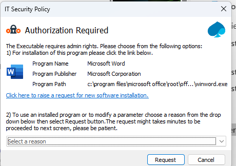
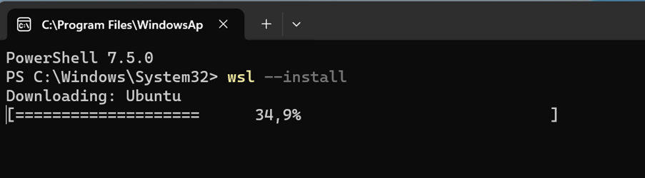
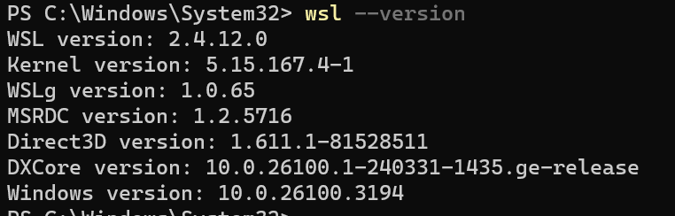
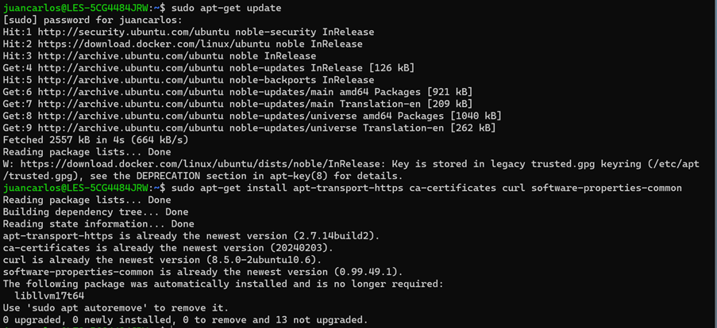
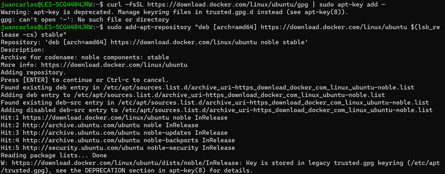
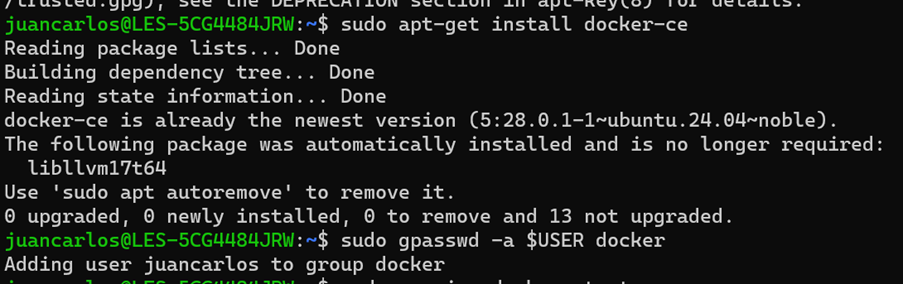
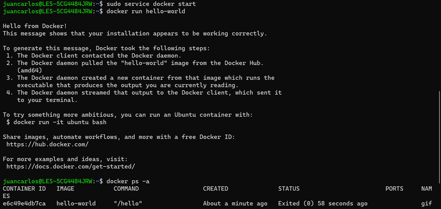

MÓDULO 1: INSTALACIÓN DOCKER EN WINDOWS
Para instalar la versión gratuita y open source de Docker Community Edition (CE) siga estos pasos:
- Instalar Ubuntu 24.04.1 LTS desde Microsoft Store:
Como no está el WSL, al ejecutar, no funcionará y saldrá un error, pero se solucionará en los pasos siguientes. - Instalar PowerShell desde Microsoft Store.
- Instalar el Subsistema de Linux para Windows:
- Ejecuta el comando
wsl --install - Manda una petición para que te lo instalen. Cuando sea aprobada, debería dejarte continuar.

Ejemplo de lo que os sale, se elige la primera opción -
Después
 -
Verificar la instalación:
-
Para ver si está instalado, ejecuta
wsl –version(es posible que necesites reiniciar el ordenador)  -
Prueba
wsl --status. Aquí debería indicar que "Windows subsystem for Linux has no installed distributions". -
Cuando abras Ubuntu, seguramente no funcione. De manera que tienes que reiniciar el PC y comprobar que ahora Ubuntu sí funciona.
-
Introducir los siguientes comandos en Ubuntu.
-
Si pide un usuario y contraseña, poner la vuestra propia.
-
Podéis continuar con estos comandos:
sudo apt update sudo apt install curl apt-transport-https ca-certificates software-properties-common sudo apt install docker.io -y curl -fsSL https://download.docker.com/linux/ubuntu/gpg | sudo gpg --dearmor -o /usr/share/keyrings/docker-archive-keyring.gpg echo "deb [arch=$(dpkg --print-architecture) signed-by=/usr/share/keyrings/docker-archive-keyring.gpg] https://download.docker.com/linux/ubuntu $(lsb_release -cs) stable" | sudo tee /etc/apt/sources.list.d/docker.list > /dev/null sudo apt update sudo apt-get install docker-ce docker-ce-cli containerd.io docker-buildx-plugin docker-compose-plugin sudo systemctl start docker ##? gpasswd -a $USER docker sudo docker run hello-world -
En este o en el siguiente paso, te dará error por falta de permisos, no hay problema.
- Abrir Ubuntu y darle a ejecutar como administrador.
-
Después, tendréis que pedir una solicitud para los permisos.
sudo systemctl start docker
sudo docker run hello-world


 -
Entrar en Ubuntu como administrador:
- Vuelve a ejecutar en Ubuntu
sudo service docker start -
Ejecuta
docker run hello-world
 -
Verificar Docker:
- Cuando ejecutes el comando anterior, debería funcionar.
- Prueba
docker ps -apara ver un listado de contenedores.